Repairer
Repair/Workshop Mangement System
- version: 1.0
- created: 11/14/2016
- latest update: 11/14/2016
- by: Usman Sher
- otsglobal.org/rms
- email: uskhan099@gmail.com
Thank You for purchasing Repairer - Repair/Workshop Management System. in case of any problem, feel free to contact us. :)
What is Repairer - Repair/Workshop Management System
Repairer - Repair/Workshop Management System is carefully developed for easy management of any type of repairshop/workshop. It's actually an innovative, simple and powerful management tool, designed and developed for you. It’s just your trusty employee. It’s a web based system where you can manage reparations, clients, inventory, purchases etc.
Repairer - Repair/Workshop Management System will be an efficient companion for managing your repair/workshop.
Features
Backend - Admin:
- Dashboard (graphical report)
- General settings (system customization)
- Client management
- Reparation management
- Inventory Management
- Purchases Managment
- Taxes, Models, Categories etc.
- Graphical Reports ( Stock & Finance )
Frontend:
- Reparation Status
- Login
Quick Start Guide - Installation Guide
- Download .zip package
- Upload it to your server
- Extract the package
- Run the uploaded url via browser (EXAMPLE.COM/REPAIRER/INSTALL). Here you have to provide the settings for REPAIRER:
- Hostname : database host name / IP
- Database Name : create a mysql database for REPAIRER on your host and write that name here
- Database username : username of the created database (if applicable)
- Database password : password of the created database
How does it work?
- The whole system is divided into two parts: admin panel and frontend (site).
- clients can view reparation status from frontend.
- Admin can manage stock.
- Admin can mange reparations and clients
- Admin will be able to perform the actions mentioned above (Features section) after log in to Repairer - Repair/Workshop Management system.
What's in Dashboard
Dashboard is the lading page of admin panel consisting graphical reports. The snapshot will make this defination very clear.
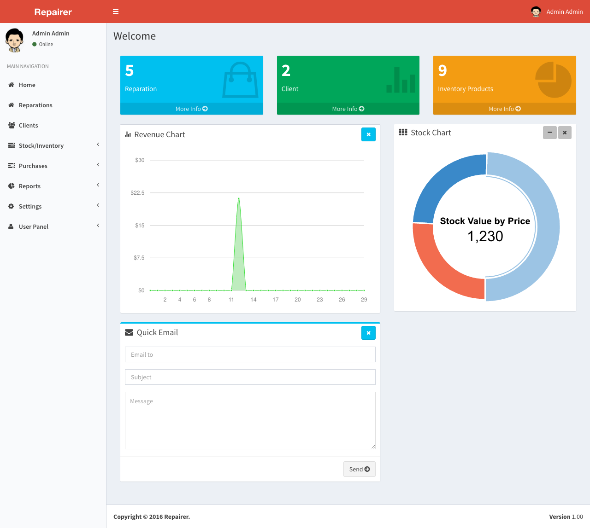
General Settings
- Go to "Settings"
- Click it and you will find a form to customize Repairer - Repair/Workshop Management.
- This is the place where you can change repairshop information, sms & email, logo, currency, invoice info etc.
- Here is the snapshot.Happy customization

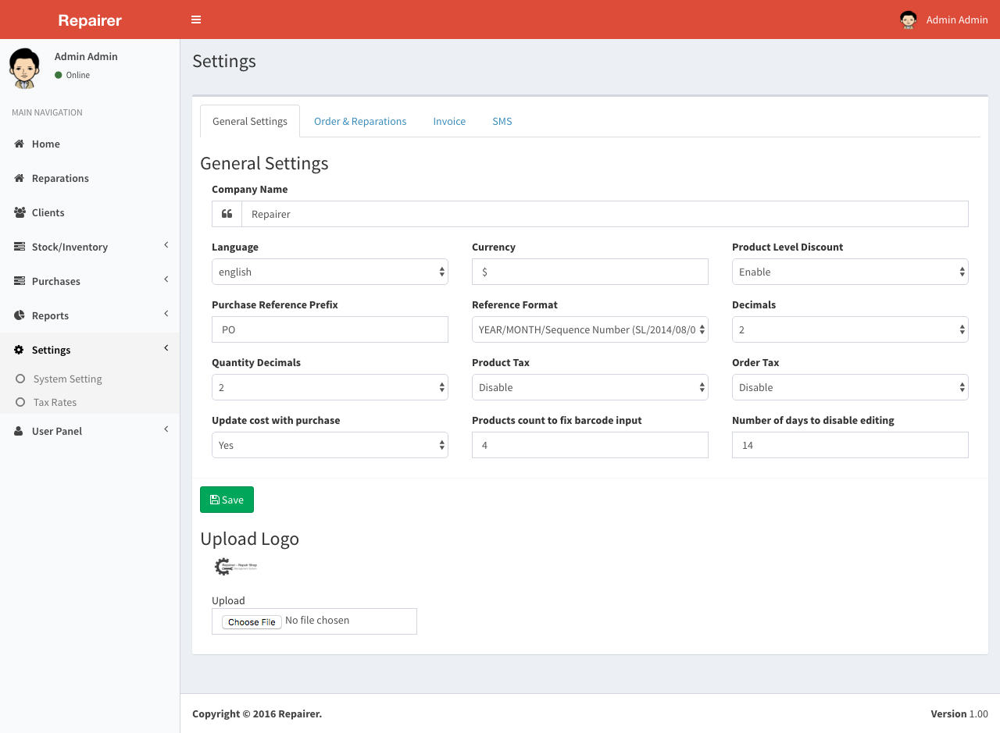
Customers/Clients
This is the customer database. Where you can handle all your clients information. create/edit/delete/view.
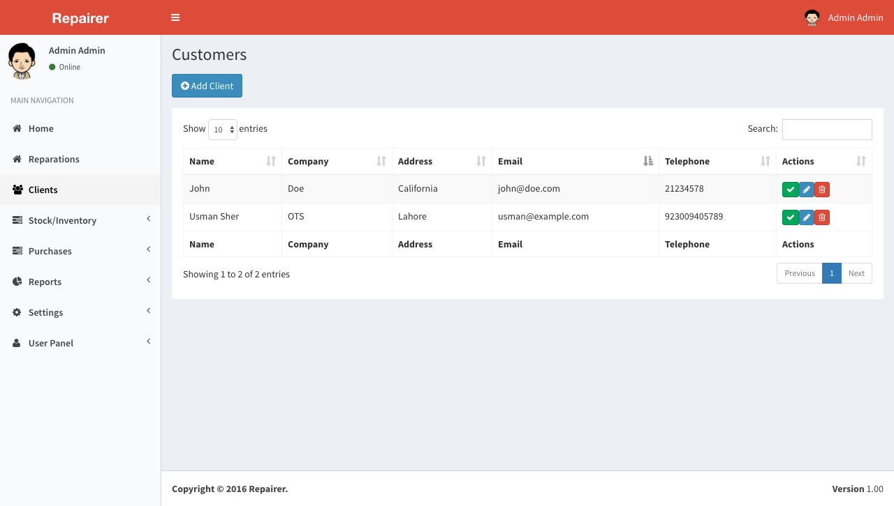
Add Client/Customer
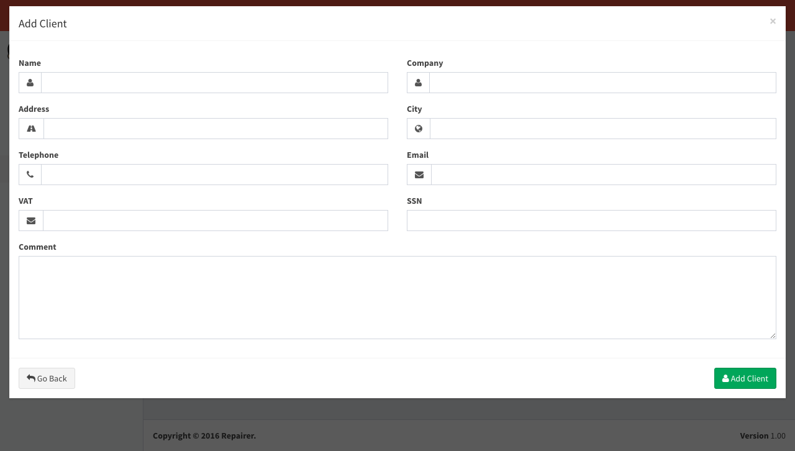
Reparations
From this section you will manage all orders and repairs, adding, changing its status, removing, modifying, or check old jobs.
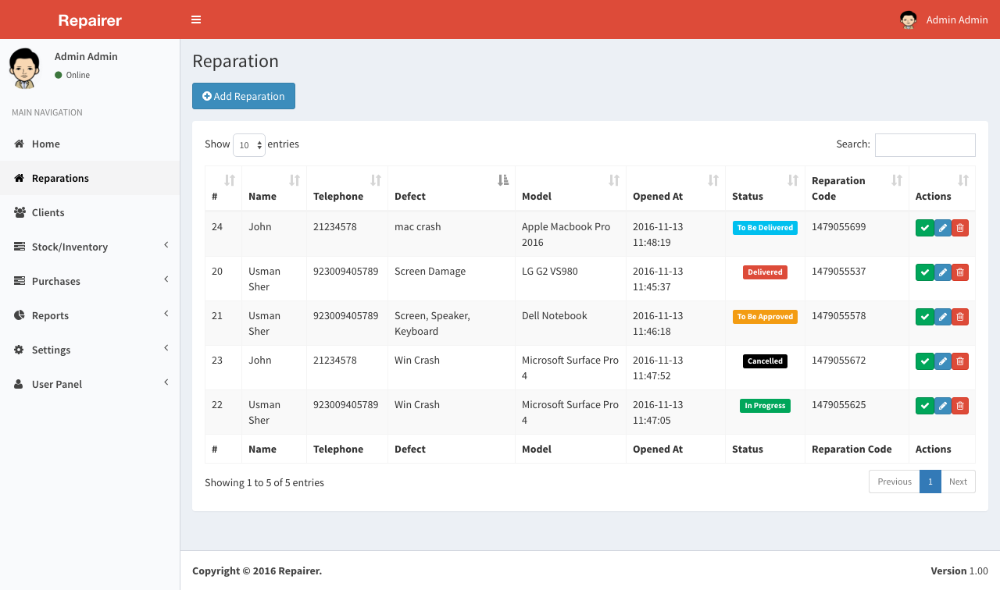
Inventory
From this section you will manage your inventory. adding, removing, modifying, viewing.
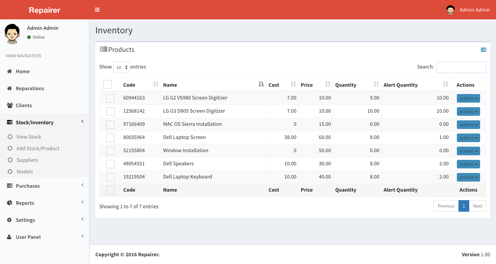
Purchases
From this section you will manage your purchases. adding, removing, modifying, viewing.
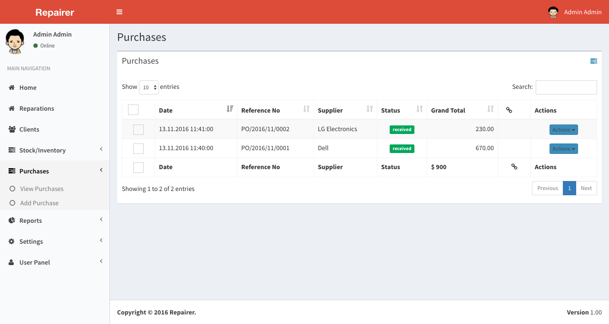
Suppliers
From this section you will manage your suppliers. adding, removing, modifying, viewing.
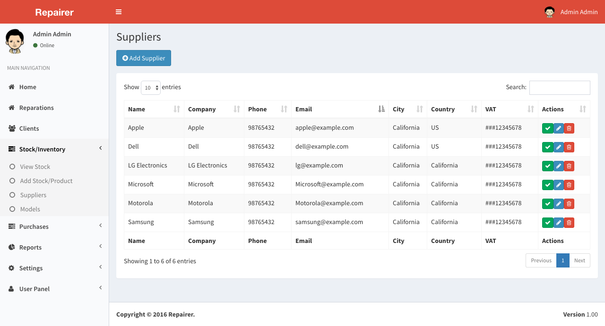
Taxes
From this section you will manage your tax rates.
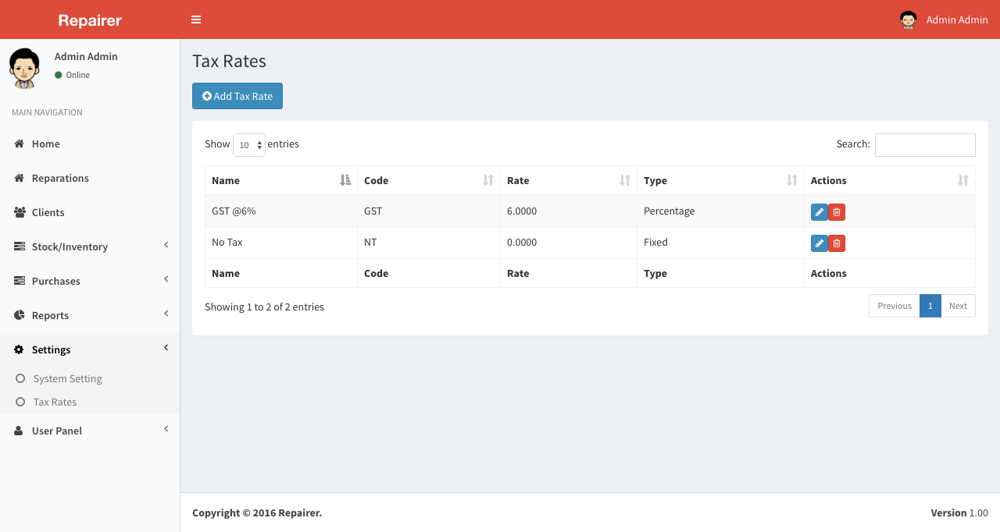
Reports
From this section you, you can see the graphical reports. such as stock chart and finance
Stock Chart
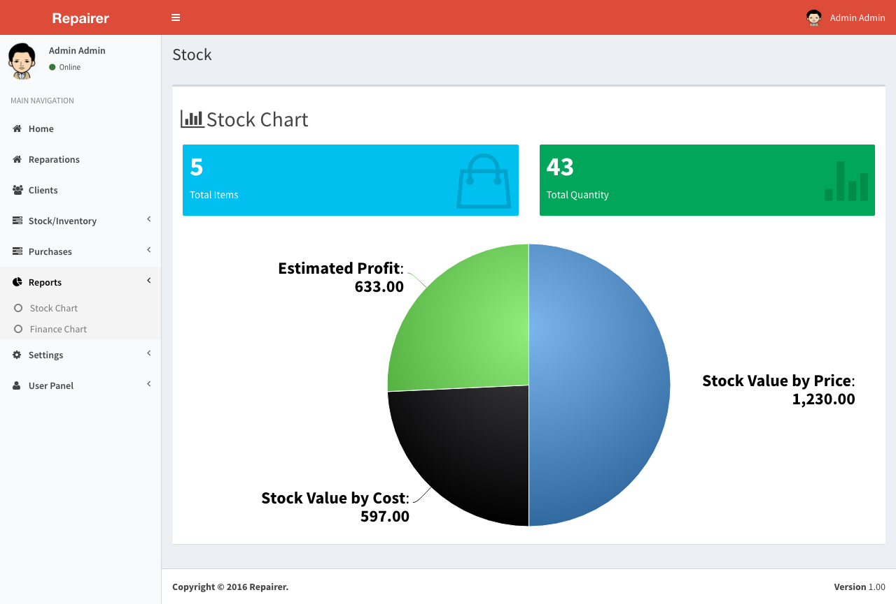
Finance
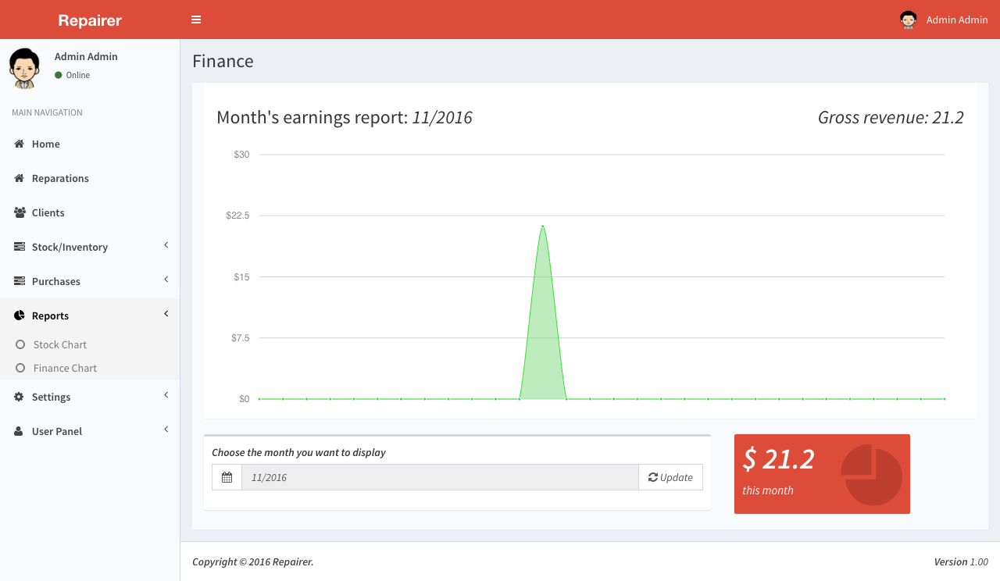
Sources and Credits
-
CodeIgniter (Framework)
-
jQuery
-
Bootstrap (CSS and JS)
-
Select 2 (CSS)
-
iCheck (JS)
-
jQuery UI (JS)
-
Datepicker & datetimepicker
-
etc.